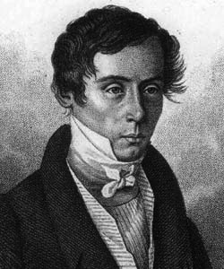

Augustin Fresnel (10 mai 1788 [Broglie] - 14 juillet 1827 [Ville d'Avray])
On ne peut pas vraiment qualifier Fresnel de mathématicien. Mais il fut un excellent physicien, père de l'optique moderne, qui sut utiliser les mathématiques pour défendre sa théorie, et c'est à ce titre que son nom est resté attaché à certaines formules d'intégration.
Augustin Fresnel est né le 10 mai 1788 à Broglie, ville de l'Eure où son père, architecte, s'occupait de la rénovation du château. La famille Fresnel est janséniste, et les rigides préceptes jansénistes auront une grande influence sur la vie d'Augustin. En 1790, après la Révolution, la famille se retire dans son village d'origine, à Mathieu, au nord de Caen. Comme ses deux frères, Augustin Fresnel est éduqué pendant son enfance par ses parents. À 12 ans, il entre à l'École Centrale de Caen. Après la Révolution, l'instruction a été confisquée aux institutions religieuses, au profit de ces nouvelles écoles ; le programme y est révolutionnaire. L'accent est mis sur les choses de la nature, sur les langues vivantes, sur les mathématiques, au détriment des langues mortes. Fresnel bénéficie en outre de l'excellence d'un de ses professeurs, François-Joseph Quesnot. A 16 ans, il entre à l'École Polytechnique, et deux ans plus tard, il choisit l'École Nationale des Ponts et Chaussées comme école d'application. Après trois ans d'étude, il devient ingénieur du Corps des Ponts et Chaussées.
Son premier poste l'emmène en Vendée, où il travaille à l'édification de la Roche-sur-Yon, alors baptisée Ville-Napoléon. Il est ensuite muté à Nyons, dans la Drôme, en vue d'établir une route de l'Italie à l'Espagne. Ces activités ne lui plaisent guère, et c'est presque par hasard, pour occuper son temps libre, et parce qu'un mémoire de Biot sur la polarisation de la lumière a retenu son attention, qu'il se met à réfléchir sur la nature des phénomènes lumineux, et à réaliser des expériences pour les étudier.
Un des événements déterminants dans la carrière scientifique de Fresnel est paradoxalement de nature politique. En 1815, Napoléon est de retour de l'île d'Elbe. Fresnel apporte alors son soutien aux Bourbons, et s'engage dans une armée dirigée par le duc d'Angoulême. Après la victoire de Napoléon, durant la période des 100 jours, Fresnel est destitué de son poste d'ingénieur. Il se réfugie alors à Mathieu, et se consacre à sa nouvelle passion, l'optique. Sitôt Napoléon défait à Waterloo, il retrouve son poste d'ingénieur, et est nommé à Rennes. Mais il n'aura alors de cesse de solliciter des congés pour poursuivre ses travaux.
Les travaux de Fresnel en optique se situent dans le cadre de la théorie ondulatoire de la lumière. Il doute beaucoup de la nature corpusculaire de celle-ci, théorie proposée par Newton, qui est alors plébiscitée, et que seuls Huyghens et Young ont osé remettre en cause. Grâce à une analyse mathématique très fine (utilisant notamment les célèbres intégrales de Fresnel), il parvient à éliminer quasiment toutes les objections faites à la théorie ondulatoire. Il s'intéresse beaucoup à la diffraction, et émet l'hypothèse alors révolutionnaire de l'existence d'une onde transversale.
Le Grand Prix de l'Académie des sciences de 1819 porte justement sur la diffraction. Fresnel y voit une chance unique d'exposer ses idées et méthodes novatrices, d'autant que le jury est plutôt rétif à la théorie ondulatoire. En poussant les calculs de Fresnel, Poisson, qui est un des membres du jury, parvient à la conclusion en apparence contradictoire suivante : si on émet de la lumière perpendiculairement à un disque sombre, alors le centre de la zone d'ombre produite par ce disque est un point lumineux. Arago, président du jury, ordonne la vérification expérimentale de cette prédiction, qui est avérée. Fresnel est donc le lauréat du Grand Prix, et en 1823, il est élu à l'Académie des sciences.
Homme aimant le côté expérimental des sciences, Fresnel était aussi passionné par les problèmes pratiques de l'optique. Enployé depuis 1819 par la commission des phares et des balises, il invente le système des lentilles à échelon, qui permet d'accroitre le pouvoir d'éclairage des phares. Le premier phare équipé de ce système a été, en 1823, le phare de Cordouan, situé au débouché de la Gironde dans l'Atlantique.
D'une santé fragile, Augustin Fresnel décède en 1827 des suites d'une tuberculose. Il avait à peine 39 ans.